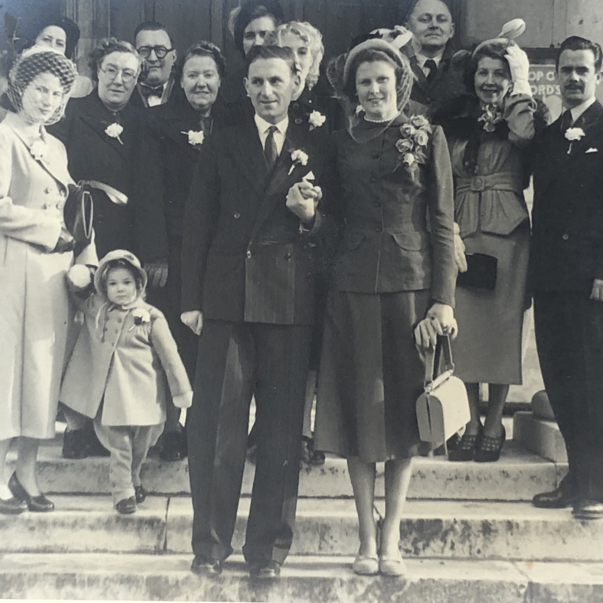

The Story Behind This
After Grandma's service, there was a large collection of photos out on the table. I took pictures of a handful that caught my eye.
Recently started running them through AI research tools. Studio names on the backs of cards, handwriting on the reverses, newspaper clippings — each one gave up a little more information. The more I dug, the further back it went. What started as a few old photos turned into a family line that traces back through Victorian London, through a Scottish noble family, and back to a King of Scotland in the 1400s.
This is what we've pieced together so far.
Note: there may be incorrect or missing information. This covers Grandma's lineage only — Grandad's side is not included.
Explore the Family Tree
Interactive family tree — click on anyone and read who they were.
The Family Crest
The FitzMaurice Earls of Orkney coat of arms — every quarter explained.
The Family Tree
There are two dedicated pages. The first is an interactive family tree — click on anyone and read who they were and how they connect to you. The second is about the family crest, which belongs to the FitzMaurice Earls of Orkney. Every quarter of that shield represents a different branch of the family including our direct line — British Prime Ministers, the first Field Marshal in British Army history, a Victorian actress whose portrait hangs in the Met in New York.
The Family Crest
The coat of arms carried by the FitzMaurice Earls of Orkney is a quartered shield — each section representing a different noble bloodline united through marriage and inheritance over centuries. The red diagonal cross on ermine is the FitzMaurice family's own mark, our direct bloodline. The ship on blue represents the ancient Earldom of Orkney, tracing back to the Norse jarls. The Hamilton lions connect the line to the Dukes of Hamilton and, through them, to Princess Mary Stewart, daughter of King James II of Scotland. Above the shield, the oak tree with a saw through its trunk is the Hamilton crest — the blade inscribed with the word "Through", a motto earned when a Hamilton ancestor rescued a Scottish king from ambush. The motto reads "Through Courage."
The Wedding of Patricia & Ronald

I took photos of Grandma and Grandad's wedding album from 11th February 1950, St Mary's Church, Wanstead. The handwritten captions throughout confirmed names and details we wouldn't have found any other way.
Venue
St. Mary the Virgin
Wanstead, London
Date
11th February 1950
Saturday morningReception
Home of Mr. & Mrs.
Jack Hinder
Flowers
Red rose spray
at the bride's shoulder
Clues from the Collection
These are the photographs and newspaper clippings that started the search — cabinet cards, studio portraits, faded snapshots, and press cuttings found among Grandma's belongings. Each one gave up a new clue.